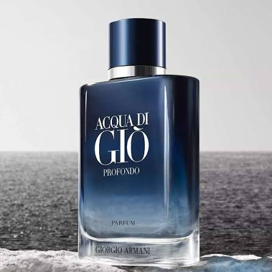

Monochrome discipline, tailoring as identity, and a fragrance language built on restraint rather than spectacle.

Style is forever; fashion is over quickly.
Giorgio Armani S.p.A. is a Milan fashion house founded in 1975 by Giorgio Armani, built on a design philosophy of soft tailoring and discreet sophistication that inverted the era's more structured, ornamented approach to luxury dressing.
For Parfum Campaigns, Armani is included as the reference case for monochrome authority: a house whose entire visual identity — logo, campaign work, and object presentation — has stayed almost unchanged since founding, treating restraint itself as the brand's most valuable asset.
Armani's strongest fragrance advertising operates on three recurring structural principles.
Giorgio Armani and Sergio Galeotti establish the house on soft tailoring and a monochrome visual identity, a deliberate departure from the ornate fashion crests common at the time.
Armani's tailoring becomes shorthand for professional authority on screen and in print, with campaign work built around controlled posture rather than narrative.
Fragrance lines extend the house's monochrome discipline into object form — clean glass, restrained typography, and consistent presentation across releases.
Giorgio Armani is archived in Parfum Campaigns as a reference for restraint-as-authority: a house that communicates luxury through control, letting posture and structure do the work instead of ornament.